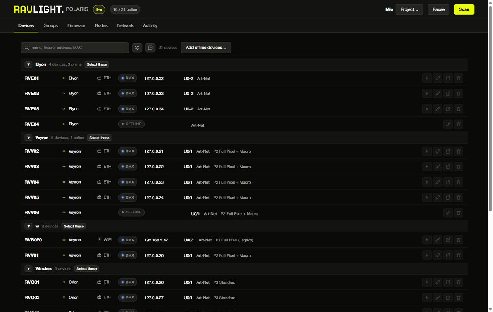
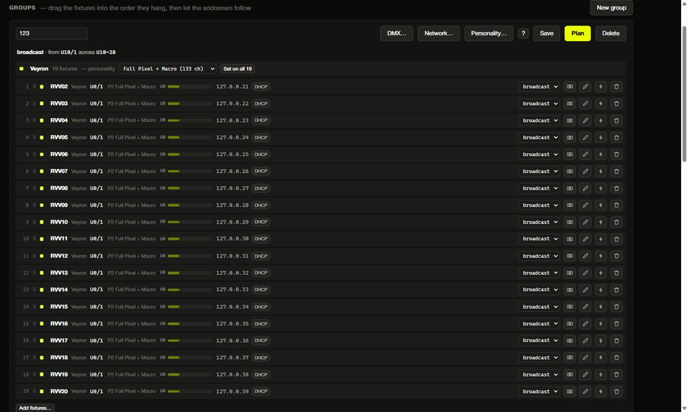
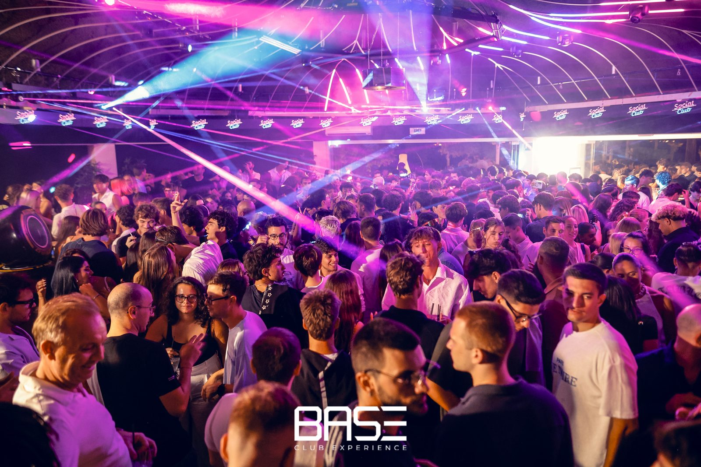

Polaris
One list for every RavLight fixture on the network. Find, patch and update a whole rig from a PC or a phone.
Version 0.3.3 · preview · free, also for commercial use

A service on one PC, opened in a browser
Polaris runs on a PC on the lighting network. You open it on that PC, or from a phone or tablet on the same network.
1 · Install
The installer starts Polaris at boot and opens the firewall. The portable version needs no installation: unzip and run.
2 · Find
Polaris searches the network and lists every fixture that answers, with what it is set to.
3 · Manage
Patch, rename, identify and update from the list. Changes are written straight to the fixtures.
Every fixture, every subnet
Give the PC an address on each lighting subnet and Polaris searches all of them. Where a router blocks the search, it probes addresses directly.
- Personality, universe, start channel and IP in one row
- Identify flashes the fixture so you find it in the rig
- Replace moves the settings of a dead fixture onto a spare
A whole group at once
Type the first start address and Polaris lays out the rest, each fixture by its own channel count. It proposes, you check, then it writes.
- Art-Net, sACN or DMX cable, chosen per group
- Universes and DHCP or static IP for every fixture
- An Orion counts twice: the winch and its LED outputs

Prepare at the workshop, open at the venue
A project file holds the fleet and the patch. Fixtures not yet on the network are kept as placeholders with their full settings, ready to bind to real hardware.
New firmware for the whole rig
Polaris downloads the firmware once and sends it to the fixtures over the network. Only the PC needs the internet.
It updates a couple of fixtures at a time and starts with one on its own. If an image is wrong, it stops at one fixture.

What it needs
- System
- Windows 64-bit
- Installer
- 6.9 MB, administrator rights once
- Portable
- 8.9 MB zip, nothing installed
- Interface
http://localhost:8420
- Ports
- UDP 4211, TCP 8420 and 8500–8599
- Firmware
- 2.23.3 or later for network updates
- Network
- Local only, best on a lighting VLAN
- Security
- No login: protect the network it runs on